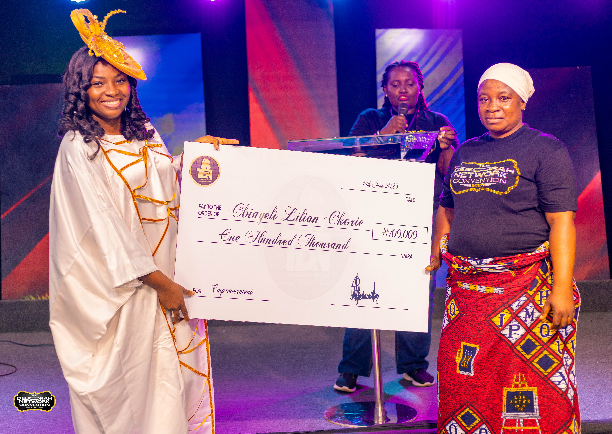
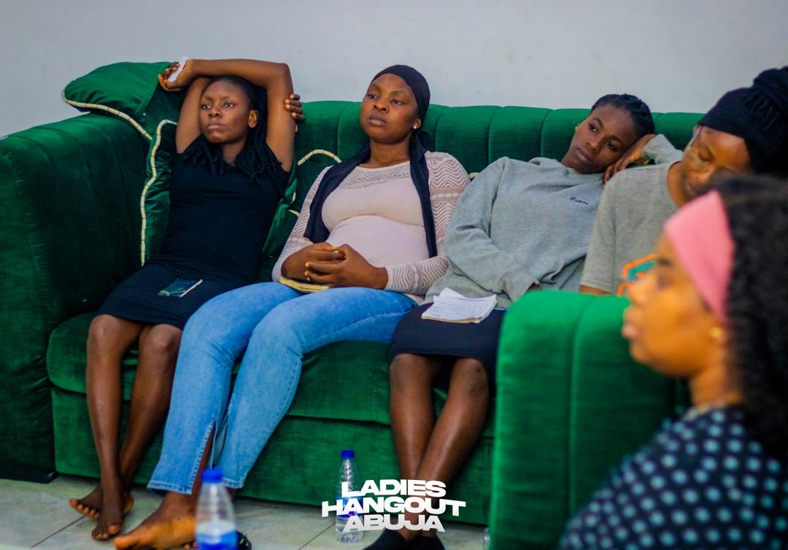

Every number is a name. Every name is a life changed.
Across communities and continents, the fruit of obedience is multiplying — one woman, one family, one nation at a time.

Real transformation begins in the heart. We walk with women through both the spiritual and the practical — because a renewed mind and an empowered hand together raise leaders who last.
From a young woman who found her voice in a mentorship circle, to a widow restored to dignity through an enterprise grant, every story starts the same way: someone believed in her, prayed with her, and equipped her to rise. That is the heartbeat of our impact — faith made visible through changed lives.
Hands-on initiatives that meet real needs and open doors to lasting change.

Scholarships, tutoring, and learning resources that keep girls and women in school.
One-on-one and group guidance that helps women discover and pursue their purpose.

Compassion in action — reaching the overlooked with care, prayer, and practical help.
Skills training and micro-grants that turn ideas into thriving enterprises.

Wellness awareness and screenings that protect the health of women and families.

Holistic programs that build the whole woman — spirit, mind, and influence.
The most powerful measure of impact is a transformed life.
I came in unsure of who I was. The Deborah Network gave me clarity, confidence, and a deep sense of purpose. For the first time, I am walking in what I was created to do.

My mentor saw potential in me that I couldn't see in myself. Within a year I had changed careers and stepped into leadership. The mentorship here truly transformed my path.

The prayer and intercession network deepened my faith beyond anything I imagined. I found a sisterhood that carries me, prays with me, and points me back to Christ again and again.

As a widow I felt invisible. This community supported me with dignity and helped me start a small business. Today I am thriving — and now I give back to other women in need.

Behind every statistic is a journey worth telling.
From timid newcomer to confident leader — how one mentorship circle reshaped a future.
Read Her Story →A season of loss became the soil for a new calling, a new business, and a new joy.
Read Her Story →
How empowerment grants and training are helping women build businesses that last.
Read Her Story →Empowerment grants don't just meet a need — they unlock a destiny. Every cheque is a vote of confidence in a woman's God-given vision.

Awarded to a member to grow her enterprise

Mentorship, accountability & encouragement
Explore the milestones, testimonies, and financials behind a year of transformation. Our latest Annual Report is available now.
Online · Here to help